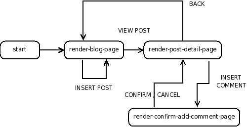

继续: Racket 中的 Web 应用
我们如何编写动态 Web 应用程序? 在本教程中,我们将展示如何使用 Racket 实现这一目标。 我们解释如何启动 Web 服务器,如何生成动态 Web 内容,以及如何与用户交互。 我们的工作示例将是一个简单的网络日记——一个 “博客”。
本教程面向那些已阅读并足够掌握 How to Design Programs 的学生,以了解如何使用结构,高阶函数和一点点变动。
1 开始使用
本教程中所需的一切都在 Racket 中提供; 我们将使用 DrRacket 模块语言。
在 DrRacket 的 Definitions 窗口中输入以下内容,然后按 Run 按钮。
#lang web-server/insta (define (start request) (response/xexpr '(html (head (title "My Blog")) (body (h1 "Under construction")))))
如果网络浏览器出现 “Under construction” 页面,那么请高兴地拍手,因为你已经构建了第一个网络应用程序! 我们还没有做到这一点,但我们会到那里。 现在,按 Stop 按钮关闭服务器。
2 应用程序
我们希望通过展示如何开发博客来讲授本教程。 博客的用户应该能够创建新帖子并向现有帖子添加评论。 我们将迭代地接近任务,指出沿途的一两个陷阱。 计划大致如下:
显示帖子的静态列表。
允许用户向系统添加新帖子。
扩展模型以允许用户向帖子添加注释。
允许所有用户共享同一组帖子。
将我们的数据结构序列化到磁盘。
到本教程结束时,我们将有一个简单的博客应用程序启动并运行。
3 基本博客
我们首先定义必要的数据结构。 帖子是:
(struct post (title body))
struct
(struct post (title body))
title : string? body : string?
练习. 举几个帖子的例子。
接下来,我们通过一个帖子列表定义一个博客:
value
blog : (listof post?)
这里,是一个非常简单的博客示例:
(define BLOG (list (post "First Post!" "Hey, this is my first post!")))
现在让我们的 Web 应用程序显示它。
4 渲染 HTML
当 Web 浏览器访问我们的博客的 URL 时,浏览器构造一个请求结构并通过网络发送到我们的应用程序。 我们需要一个函数,我们称之为 start, 来响应这些请求并产生响应。 一个基本的响应是显示一个 HTML 页面; 这是通过函数 response/xexpr 来完成的, 它接受一个代表所需 HTML 的 X-expression 。 X-expression 定义为:
(define xexpr/c (flat-rec-contract xexpr (or/c string? (cons/c symbol? (listof xexpr)) (cons/c symbol? (cons/c (listof (list/c symbol? string?)) (listof xexpr))))))
以下示例说明使用 X-expression 表示 HTML 是多么自然。
xexpr/c 中的第一个选择是 string? 。 例如, HTML 的 hello 表示为 "hello" 。 为了保证有效的 HTML,字符串在输出时会自动转义。 因此, X-expression "<b>Unfinished tag" 被呈现为 HTML <b>Unfinished tag, 而不是作为 <b>Unfinished tag 。 类似地, "<i>Finished tag</i>" 被呈现为 <i>Finished tag</i>, 而不是作为 <i>Finished tag</i> 。
xexpr/c 中的第二个选择是递归合同 (cons/c symbol? (listof xexpr)) 。 例如, HTML <p>This is an example</p> 由 X-expression 表示为:
'(p "This is an example").
最后, xexpr/c 中的第三个选项允许 HTML 标签中的参数。 例如, <a href="link.html">Past</a> 表示为:
'(a ((href "link.html")) "Past")
以及 <p>This is <div class="emph">another</div> example.</p> 表示为:
'(p "This is " (div ((class "emph")) "another") " example.").
我们也可以使用 cons 和 list 来 “手动” 生成这些 X-expression ,但是可以得到很强大的表现形式。 例如,以下 Racket 表达式都计算为相同的 X-expression:
(list 'html (list 'head (list 'title "Some title")) (list 'body (list 'p "This is a simple static page.")))
'(html (head (title "Some title")) (body (p "This is a simple static page.")))
但是后者更容易阅读和输入,因为它使用前导引号来简洁地表示列表结构。 这就是如何使用 aplomb 构造静态 html 响应!(有关扩展列表缩写形式的更多信息, 请参阅 How to Design Programs 的 Section 13 。)
然而,事实证明,这种简单的列表缩写不能产生动态的 web 内容。 如果我们试图将表达式注入到由简单列表缩写构造的 X-expression 中,那些表达式将被视为列表结构的一部分,字面上!我们需要的是一个符号, 给出了引用列表缩写的方便性,但是这也允许我们将列表结构的部分视为正常表达式。 也就是说,我们想定义一个 template ,它的占位符可以很容易地表达并动态填充。
Racket 以称为 quasiquote 的符号的形式提供了这种模板功能。在排序中,列表缩写不是前导引用,而是带有反向引号(‘)。 如果我们希望这个反引号的列表的任何子表达式被正常地计算(“未引用”), 那么我们所要做的就是在该子表达式前面放置一个逗号(,)。例如:
; render-greeting: string -> response ; Consumes a name, and produces a dynamic response. (define (render-greeting a-name) (response/xexpr `(html (head (title "Welcome")) (body (p ,(string-append "Hello " a-name))))))
练习. 编写一个函数,它使用一个 post 并生成一个表示该内容的 X-expression 。
value
render-post : (post? . -> . xexpr/c)
例如,我们想要:
(render-post (post "First post!" "This is a first post."))
得出:
'(div ((class "post")) "First post!" (p "This is a first post."))
—
— — —
我们有时想要将 X-expression 的列表嵌入到另一个充当模板的列表中。 例如,给定 X-expression 的列表 '((li "Larry") (li "Curly") (li "Moe")),我们可能想创建单个 X-expression
'(ul (li "Larry") (li "Curly") (li "Moe"))
这不能使用纯引号,因为在 '((li "Larry") (li "Curly") (li "Moe")) 前放置一个逗号将引用整个列表, 产生格式不正确的表达式 '(ul ((li "Larry") (li "Curly") (li "Moe"))) 。
相反,我们必须拼接列表,如下: `(ul ,@'((li "Larry") (li "Curly") (li "Moe"))) 。 unquote-splicing 形式, ,@expression, 允许我们方便地将 X-expression 片段列表拼接到更大的模板列表中。 为了概括示例,这里有两个帮助函数将任何 X-expression 列表转换为一个表示无序,逐项 HTML 列表的 X-expression :
; render-as-itemized-list: (listof xexpr) -> xexpr ; Consumes a list of items, and produces a rendering ; as an unordered list. (define (render-as-itemized-list fragments) `(ul ,@(map render-as-item fragments))) ; render-as-item: xexpr -> xexpr ; Consumes an xexpr, and produces a rendering ; as a list item. (define (render-as-item a-fragment) `(li ,a-fragment))
练习. 编写一个函数 render-posts ，它使用一个 (listof post?) 并为该内容生成一个 X-expression 。
value
例如,
(render-posts empty)
应该产生
'(div ((class "posts")))
和
(render-posts (list (post "Post 1" "Body 1") (post "Post 2" "Body 2")))
应该产生
'(div ((class "posts")) (div ((class "post")) "Post 1" (p "Body 1")) (div ((class "post")) "Post 2" (p "Body 2")))
—
— — —
现在我们有了 render-posts 数,让我们重新访问我们的 web 应用程序, 并改变我们的 start 函数返回一个有趣的 response 。
#lang web-server/insta ; A blog is a (listof post) ; and a post is a (post title body) (struct post (title body)) ; BLOG: blog ; The static blog. (define BLOG (list (post "Second Post" "This is another post") (post "First Post" "This is my first post"))) ; start: request -> response ; Consumes a request, and produces a page that displays all of the ; web content. (define (start request) (render-blog-page BLOG request)) ; render-blog-page: blog request -> response ; Consumes a blog and a request, and produces an HTML page ; of the content of the blog. (define (render-blog-page a-blog request) (response/xexpr `(html (head (title "My Blog")) (body (h1 "My Blog") ,(render-posts a-blog))))) ; render-post: post -> xexpr ; Consumes a post, produces an xexpr fragment of the post. (define (render-post a-post) `(div ((class "post")) ,(post-title a-post) (p ,(post-body a-post)))) ; render-posts: blog -> xexpr ; Consumes a blog, produces an xexpr fragment ; of all its posts. (define (render-posts a-blog) `(div ((class "posts")) ,@(map render-post a-blog)))
如果我们点击 Run 运行,我们应该在你的 Web 浏览器中看到博客帖子。
5 检查请求
我们的应用程序仍然有点太静态:我们动态构建页面,但我们还没有为用户提供一种方法来创建新帖子。 让我们现在通过提供一个表单,让用户添加一个新的博客条目。 当用户按下提交按钮时,我们希望新的帖子出现在页面的顶部。
我们还没有对我们传递的 request 对象做任何事情。 正如你可能已经猜到的,它不是真的应该被忽略这么多! 当用户填写一个 Web 表单并提交它时, 用户的浏览器使用 request-bindings 函数构造一个包含表单值的新 request ,我们可以在我们的末尾提取它:
value
request-bindings : (request? . -> . bindings?)
要从一组绑定中提取单个 Web 表单值,Racket 提供了函数 extract-binding/single, 它还获取 Web 表单的相应字段的名称:
value
extract-binding/single : (symbol? bindings? . -> . string?)
要验证一组绑定是否包含特定字段,请使用 exists-binding?:
value
exists-binding? : (symbol? bindings? . -> . boolean?)
通过这些功能,我们可以设计响应 request 并有效响应的函数。
练习. 编写一个函数 can-parse-post? 来响应一组绑定。 如果符号 'title 和 'body 都存在绑定,它应该产生 #t ,否则产生 #f 。
value
Exercise. 编写一个函数 parse-post ,响应一组绑定。 假设绑定结构有 'title 和 'body 的符号值, parse-post 应该产生一个包含这些值的帖子。
value
parse-post : (bindings? . -> . post?)
现在我们有了这些辅助函数,我们可以扩展我们的 Web 应用程序来处理表单输入。 我们将在网页底部添加一个小表单,我们将调整我们的程序以处理添加新帖子。 所以我们的新的 start 方法将检查 request 有一个可解析的帖子, 然后将尝试扩展的帖子集,并将最终显示新的一组博客帖子:
#lang web-server/insta ; A blog is a (listof post) ; and a post is a (post title body) (struct post (title body)) ; BLOG: blog ; The static blog. (define BLOG (list (post "Second Post" "This is another post") (post "First Post" "This is my first post"))) ; start: request -> response ; Consumes a request and produces a page that displays all of the ; web content. (define (start request) (define a-blog (cond [(can-parse-post? (request-bindings request)) (cons (parse-post (request-bindings request)) BLOG)] [else BLOG])) (render-blog-page a-blog request)) ; can-parse-post?: bindings -> boolean ; Produces true if bindings contains values for 'title and 'body. (define (can-parse-post? bindings) (and (exists-binding? 'title bindings) (exists-binding? 'body bindings))) ; parse-post: bindings -> post ; Consumes a bindings, and produces a post out of the bindings. (define (parse-post bindings) (post (extract-binding/single 'title bindings) (extract-binding/single 'body bindings))) ; render-blog-page: blog request -> response ; Consumes a blog and a request, and produces an HTML page ; of the content of the blog. (define (render-blog-page a-blog request) (response/xexpr `(html (head (title "My Blog")) (body (h1 "My Blog") ,(render-posts a-blog) (form (input ((name "title"))) (input ((name "body"))) (input ((type "submit")))))))) ; render-post: post -> xexpr ; Consumes a post, produces an xexpr fragment of the post. (define (render-post a-post) `(div ((class "post")) ,(post-title a-post) (p ,(post-body a-post)))) ; render-posts: blog -> xexpr ; Consumes a blog, produces an xexpr fragment ; of all its posts. (define (render-posts a-blog) `(div ((class "posts")) ,@(map render-post a-blog)))
这个解决方案似乎能够工作,但它有一个缺陷! 尝试添加两个新帖子。 发生了什么?
6 高级控制流
目前,我们毫无疑问忽略了一个巨大的问题,博客只接受一个新的博客条目。别担心,我们会解决这个问题!
现在更紧迫的问题是更高层次的问题: 虽然我们有一个功能, start, 响应针对我们的应用程序的 URL 的 request ,该功能已经开始承担太多的责任。 特别是,现在 start 处理两种不同类型的 request: 用于显示博客的请求和用于添加新博客帖子的请求。 它已经成为一种交通警察–一个调度员–为我们的网络应用程序的所有行为服务,包括我们以后可能想要添加的任何新功能。 如果不同种类的 request 被自动引导到不同的功能上,那么 start (和我们)的生活会更容易。这在 Racket 中是否可行?
是的!Web 服务器库提供了一个函数 send/suspend/dispatch, 它允许我们创建 URL,将针对它们的 request 引导到我们应用程序中的特定功能。 我们用一个令人眼花缭乱的例子来演示。在一个新文件中,在 DrRacket 的定义窗口输入以下内容。
#lang web-server/insta ; start: request -> response (define (start request) (phase-1 request)) ; phase-1: request -> response (define (phase-1 request) (define (response-generator embed/url) (response/xexpr `(html (body (h1 "Phase 1") (a ((href ,(embed/url phase-2))) "click me!"))))) (send/suspend/dispatch response-generator)) ; phase-2: request -> response (define (phase-2 request) (define (response-generator embed/url) (response/xexpr `(html (body (h1 "Phase 2") (a ((href ,(embed/url phase-1))) "click me!"))))) (send/suspend/dispatch response-generator))
这是一个循环又一个循环运行的 Web 应用程序。当用户首次访问应用程序时,用户在 phase-1 开始。 生成的页面有一个超链接,当点击时,继续进入 phase-2 。用户可以点击回来,并回到 phase-1, 并且循环重复。
让我们更仔细地看看 send/suspend/dispatch 机制。 send/suspend/dispatch 消耗一个响应生成函数, 并给它另一个函数,称为 embed/url, 我们将用它来构建特殊的 URL。 这些 URL 是什么特别的:当 web 浏览器访问其中一个时,我们的 web 应用程序重新启动, 而不是从 start, 而是从我们与 URL 关联的处理程序。 在处理程序 phase-1 中,使用 embed/url 将链接与处理程序 phase-2 相关联,反之亦然。
我们可以更复杂地处理与 embed/url 相关的处理程序。 因为处理程序只是一个请求消耗的函数,它可以在本地定义,所以可以看到其定义范围内的所有其他变量。这里是另一个循环的例子:
#lang web-server/insta ; start: request -> response (define (start request) (show-counter 0 request)) ; show-counter: number request -> doesn't return ; Displays a number that's hyperlinked: when the link is pressed, ; returns a new page with the incremented number. (define (show-counter n request) (define (response-generator embed/url) (response/xexpr `(html (head (title "Counting example")) (body (a ((href ,(embed/url next-number-handler))) ,(number->string n)))))) (define (next-number-handler request) (show-counter (+ n 1) request)) (send/suspend/dispatch response-generator))
此示例显示,我们可以累积交互的结果。 即使用户通过访问和查看零开始, 由 next-number-handler 产生的处理程序继续交互,累积更大和更大的数。
我们现在要进入循环,让我们继续前进,并返回我们的博客应用程序。 我们将调整表单的操作,以便将提交 request 定向到与单独的处理程序(称为 insert-post-handler )相关联的 URL。
#lang web-server/insta ; A blog is a (listof post) ; and a post is a (post title body) (struct post (title body)) ; BLOG: blog ; The static blog. (define BLOG (list (post "Second Post" "This is another post") (post "First Post" "This is my first post"))) ; start: request -> doesn't return ; Consumes a request and produces a page that displays all of the ; web content. (define (start request) (render-blog-page BLOG request)) ; parse-post: bindings -> post ; Extracts a post out of the bindings. (define (parse-post bindings) (post (extract-binding/single 'title bindings) (extract-binding/single 'body bindings))) ; render-blog-page: blog request -> doesn't return ; Consumes a blog and a request, and produces an HTML page ; of the content of the blog. (define (render-blog-page a-blog request) (define (response-generator embed/url) (response/xexpr `(html (head (title "My Blog")) (body (h1 "My Blog") ,(render-posts a-blog) (form ((action ,(embed/url insert-post-handler))) (input ((name "title"))) (input ((name "body"))) (input ((type "submit")))))))) (define (insert-post-handler request) (render-blog-page (cons (parse-post (request-bindings request)) a-blog) request)) (send/suspend/dispatch response-generator)) ; render-post: post -> xexpr ; Consumes a post, produces an xexpr fragment of the post. (define (render-post a-post) `(div ((class "post")) ,(post-title a-post) (p ,(post-body a-post)))) ; render-posts: blog -> xexpr ; Consumes a blog, produces an xexpr fragment ; of all its posts. (define (render-posts a-blog) `(div ((class "posts")) ,@(map render-post a-blog)))
请注意, render-blog-page 函数的结构与上一个 show-counter 示例的结构非常相似。 用户最后可以在博客中添加和查看多个帖子。
不幸的是,我们的设计仍然遇到一个问题,这可以通过添加一些帖子到系统,然后在新的浏览器窗口中访问 Web 应用程序的 URL。 当你尝试这样做会发生什么?
7 分享和同享
我们的应用程序的问题是每个浏览器窗口跟踪其自己不同的博客。 对于大多数人来说,这违背了博客的目的,即与他人分享! 当我们插入新帖子时,而不是创建新的博客值,我们想修改博客。 换句话说,我们想做一个结构性的改变。 (How to Design Programs 第 41 章)。 所以让我们从 BLOG 绑定切换到一个列表,而不是绑定到一个可变的结构。 如果我们只是使用一个结构,我们会写如下:
(struct blog (posts))
但是,默认情况下,Racket 中的结构是不可变的。 要获得对结构变量的访问,我们需要通过在我们的一些结构定义中添加 #:mutable 关键字来覆盖这个默认值。 特别是,如果我们要允许更改博客,我们必须将博客结构的定义更改为以下内容:
(struct blog (posts) #:mutable)
struct
(struct blog (posts))
posts : (listof post?)
可变结构提供改变其字段的功能; 在这种情况下,我们提供了结构 set-blog-posts!, 它允许我们更改博客的帖子:
value
练习. 写一个函数 blog-insert-post!
value
其预期的副作用是扩展博客的帖子。
—
— — —
我们现在必须修改 Web 应用程序以使用我们的博客的新数据表示。 由于博客现在被全局变量 BLOG 引用,它不再需要作为参数传递给像 render-blog-page 这样的处理程序。 这里是我们更新的 Web 应用程序,经过调整,包含 insert-blog-post!, 并进行了一些变量的清理:
#lang web-server/insta ; A blog is a (blog posts) ; where posts is a (listof post) (struct blog (posts) #:mutable) ; and post is a (post title body) ; where title is a string, and body is a string (struct post (title body)) ; BLOG: blog ; The initial BLOG. (define BLOG (blog (list (post "Second Post" "This is another post") (post "First Post" "This is my first post")))) ; blog-insert-post!: blog post -> void ; Consumes a blog and a post, adds the post at the top of the blog. (define (blog-insert-post! a-blog a-post) (set-blog-posts! a-blog (cons a-post (blog-posts a-blog)))) ; start: request -> doesn't return ; Consumes a request and produces a page that displays ; all of the web content. (define (start request) (render-blog-page request)) ; parse-post: bindings -> post ; Extracts a post out of the bindings. (define (parse-post bindings) (post (extract-binding/single 'title bindings) (extract-binding/single 'body bindings))) ; render-blog-page: request -> doesn't return ; Produces an HTML page of the content of the BLOG. (define (render-blog-page request) (define (response-generator embed/url) (response/xexpr `(html (head (title "My Blog")) (body (h1 "My Blog") ,(render-posts) (form ((action ,(embed/url insert-post-handler))) (input ((name "title"))) (input ((name "body"))) (input ((type "submit")))))))) (define (insert-post-handler request) (blog-insert-post! BLOG (parse-post (request-bindings request))) (render-blog-page request)) (send/suspend/dispatch response-generator)) ; render-post: post -> xexpr ; Consumes a post, produces an xexpr fragment of the post. (define (render-post a-post) `(div ((class "post")) ,(post-title a-post) (p ,(post-body a-post)))) ; render-posts: -> xexpr ; Consumes a blog, produces an xexpr fragment ; of all its posts. (define (render-posts) `(div ((class "posts")) ,@(map render-post (blog-posts BLOG))))
现在从两个单独的浏览器窗口访问博客,并添加每个人的帖子。 你会很高兴看到这两个窗口共享同一个博客!
8 扩展模型
接下来,让我们扩展应用程序,以便一个帖子可以包含一个注释列表。 数据定义变为:
struct
(struct post (title body comments) #:mutable) title : string? body : string? comments : (listof string?)
练习.为帖子写入更新的数据结构定义。 确保使结构可变,因为我们打算向帖子添加注释。
练习. 组织一些帖子的例子。
练习. 定义一个函数 post-insert-comment!
value
其意图副作用是在帖子的评论列表的末尾添加新的评论。
练习. 调整 render-post ,以便生成的片段将在逐项列表中包含注释。
练习. 因为我们已经将 post 扩展为包含注释,所以你还需要调整应用程序的其他操作后部分,例如使用 post 。
—
— — —
现在我们已经调整了函数以适应 post 的新结构,我们的 web 应用程序应该是可运行的。 用户甚至可以看到我们的劳动的一些成果:如果初始 BLOG 具有带评论的帖子,用户现在应该看到它们。 另一方面,显然丢失了一些东西:用户没有通过其添加注释的接口!
9 打破显示
我们应如何将评论更全面地纳入用户的网络体验? 看到一个页面上的所有帖子和评论可能有点压倒性,所以也许我们应该阻止在主博客页面上显示评论。 相反,让我们做一个次要的“细节”视图的一个位置,并在其中提出其意见。 因此,博客的顶级视图将仅显示帖子的标题和主体以及其评论的数量。
所以现在我们需要一种方式来访问帖子的详细信息页面。 一种方法是超链接帖子的标题:如果希望查看帖子的详细信息页面,则只需要点击帖子的标题。 在该帖子的详细信息页面中,我们甚至可以添加一个表单,让用户添加新的评论。 此新版本的 Web 应用程序的页面流简单描述如下:

此图中的每个节点(气泡)对应于请求消耗处理程序。 正如你可能期望的,我们将使用 send/suspend/dispatch 一些。 图中的每个箭头都将被实现为我们使用 embed/url 生成的 URL。
这种方法有一个稍微混乱的后果。 以前,我们渲染了没有任何超链接的帖子列表。 但是由于生成特殊调度 URL 的任何函数都必须使用 embed/url 这样做, 所以我们需要调整 render-posts 和 render-post 来使用, 并在使用 embed/url 本身时创建这些超级链接的标题。
我们现在有一个非常复杂的 Web 应用程序,允许创建帖子和添加注释。 这是它的外观:
#lang web-server/insta ; A blog is a (blog posts) ; where posts is a (listof post) (struct blog (posts) #:mutable) ; and post is a (post title body comments) ; where title is a string, body is a string, ; and comments is a (listof string) (struct post (title body comments) #:mutable) ; BLOG: blog ; The initial BLOG. (define BLOG (blog (list (post "Second Post" "This is another post" (list)) (post "First Post" "This is my first post" (list "First comment!"))))) ; blog-insert-post!: blog post -> void ; Consumes a blog and a post, adds the post at the top of the blog. (define (blog-insert-post! a-blog a-post) (set-blog-posts! a-blog (cons a-post (blog-posts a-blog)))) ; post-insert-comment!: post string -> void ; Consumes a post and a comment string. As a side-effect, ; adds the comment to the bottom of the post's list of comments. (define (post-insert-comment! a-post a-comment) (set-post-comments! a-post (append (post-comments a-post) (list a-comment)))) ; start: request -> doesn't return ; Consumes a request, and produces a page that displays ; all of the web content. (define (start request) (render-blog-page request)) ; render-blog-page: request -> doesn't return ; Produces an HTML page of the content of the ; BLOG. (define (render-blog-page request) (define (response-generator embed/url) (response/xexpr `(html (head (title "My Blog")) (body (h1 "My Blog") ,(render-posts embed/url) (form ((action ,(embed/url insert-post-handler))) (input ((name "title"))) (input ((name "body"))) (input ((type "submit")))))))) ; parse-post: bindings -> post ; Extracts a post out of the bindings. (define (parse-post bindings) (post (extract-binding/single 'title bindings) (extract-binding/single 'body bindings) (list))) (define (insert-post-handler request) (blog-insert-post! BLOG (parse-post (request-bindings request))) (render-blog-page request)) (send/suspend/dispatch response-generator)) ; render-post-detail-page: post request -> doesn't return ; Consumes a post and request, and produces a detail page ; of the post. The user will be able to insert new comments. (define (render-post-detail-page a-post request) (define (response-generator embed/url) (response/xexpr `(html (head (title "Post Details")) (body (h1 "Post Details") (h2 ,(post-title a-post)) (p ,(post-body a-post)) ,(render-as-itemized-list (post-comments a-post)) (form ((action ,(embed/url insert-comment-handler))) (input ((name "comment"))) (input ((type "submit")))))))) (define (parse-comment bindings) (extract-binding/single 'comment bindings)) (define (insert-comment-handler a-request) (post-insert-comment! a-post (parse-comment (request-bindings a-request))) (render-post-detail-page a-post a-request)) (send/suspend/dispatch response-generator)) ; render-post: post (handler -> string) -> xexpr ; Consumes a post, produces an xexpr fragment of the post. ; The fragment contains a link to show a detailed view of the post. (define (render-post a-post embed/url) (define (view-post-handler request) (render-post-detail-page a-post request)) `(div ((class "post")) (a ((href ,(embed/url view-post-handler))) ,(post-title a-post)) (p ,(post-body a-post)) (div ,(number->string (length (post-comments a-post))) " comment(s)"))) ; render-posts: (handler -> string) -> xexpr ; Consumes a embed/url, and produces an xexpr fragment ; of all its posts. (define (render-posts embed/url) (define (render-post/embed/url a-post) (render-post a-post embed/url)) `(div ((class "posts")) ,@(map render-post/embed/url (blog-posts BLOG)))) ; render-as-itemized-list: (listof xexpr) -> xexpr ; Consumes a list of items, and produces a rendering as ; an unorderered list. (define (render-as-itemized-list fragments) `(ul ,@(map render-as-item fragments))) ; render-as-item: xexpr -> xexpr ; Consumes an xexpr, and produces a rendering ; as a list item. (define (render-as-item a-fragment) `(li ,a-fragment))
但它仍然有一个问题:一旦在 post-detail-page, 用户返回博客的唯一方法是使用后退按钮! 这是破坏性的,它可能允许用户“卡住”在 Web 应用程序的黑暗角落。 为了解决这个问题,让我们改进页面流。
10 添加一个返回按钮
也许我们应该从 render-post-detail-page 中添加一个 BACK 链接,它返回我们到顶级博客。 这是相应的页面流程图:

练习. 调整 render-post-detail-page 以包括回到 render-blog-page 的另一个链接。
并且由于用户可能对评论有改变的心,让我们丰富流程,以给用户提供退出提交的机会。

请注意,虽然这种变化可能看起来很复杂,但它不会影响我们的处理程序的一般形态:
#lang web-server/insta ; A blog is a (blog posts) ; where posts is a (listof post) (struct blog (posts) #:mutable) ; and post is a (post title body comments) ; where title is a string, body is a string, ; and comments is a (listof string) (struct post (title body comments) #:mutable) ; BLOG: blog ; The initial BLOG. (define BLOG (blog (list (post "Second Post" "This is another post" (list)) (post "First Post" "This is my first post" (list "First comment!"))))) ; blog-insert-post!: blog post -> void ; Consumes a blog and a post, adds the post at the top of the blog. (define (blog-insert-post! a-blog a-post) (set-blog-posts! a-blog (cons a-post (blog-posts a-blog)))) ; post-insert-comment!: post string -> void ; Consumes a post and a comment string. As a side-efect, ; adds the comment to the bottom of the post's list of comments. (define (post-insert-comment! a-post a-comment) (set-post-comments! a-post (append (post-comments a-post) (list a-comment)))) ; start: request -> doesn't return ; Consumes a request and produces a page that displays ; all of the web content. (define (start request) (render-blog-page request)) ; render-blog-page: request -> doesn't return ; Produces an HTML page of the content of the ; BLOG. (define (render-blog-page request) (define (response-generator embed/url) (response/xexpr `(html (head (title "My Blog")) (body (h1 "My Blog") ,(render-posts embed/url) (form ((action ,(embed/url insert-post-handler))) (input ((name "title"))) (input ((name "body"))) (input ((type "submit")))))))) ; parse-post: bindings -> post ; Extracts a post out of the bindings. (define (parse-post bindings) (post (extract-binding/single 'title bindings) (extract-binding/single 'body bindings) (list))) (define (insert-post-handler request) (blog-insert-post! BLOG (parse-post (request-bindings request))) (render-blog-page request)) (send/suspend/dispatch response-generator)) ; render-post-detail-page: post request -> doesn't return ; Consumes a post and produces a detail page of the post. ; The user will be able to either insert new comments ; or go back to render-blog-page. (define (render-post-detail-page a-post request) (define (response-generator embed/url) (response/xexpr `(html (head (title "Post Details")) (body (h1 "Post Details") (h2 ,(post-title a-post)) (p ,(post-body a-post)) ,(render-as-itemized-list (post-comments a-post)) (form ((action ,(embed/url insert-comment-handler))) (input ((name "comment"))) (input ((type "submit")))) (a ((href ,(embed/url back-handler))) "Back to the blog"))))) (define (parse-comment bindings) (extract-binding/single 'comment bindings)) (define (insert-comment-handler request) (render-confirm-add-comment-page (parse-comment (request-bindings request)) a-post request)) (define (back-handler request) (render-blog-page request)) (send/suspend/dispatch response-generator)) ; render-confirm-add-comment-page : ; comment post request -> doesn't return ; Consumes a comment that we intend to add to a post, as well ; as the request. If the user follows through, adds a comment ; and goes back to the display page. Otherwise, goes back to ; the detail page of the post. (define (render-confirm-add-comment-page a-comment a-post request) (define (response-generator embed/url) (response/xexpr `(html (head (title "Add a Comment")) (body (h1 "Add a Comment") "The comment: " (div (p ,a-comment)) "will be added to " (div ,(post-title a-post)) (p (a ((href ,(embed/url yes-handler))) "Yes, add the comment.")) (p (a ((href ,(embed/url cancel-handler))) "No, I changed my mind!")))))) (define (yes-handler request) (post-insert-comment! a-post a-comment) (render-post-detail-page a-post request)) (define (cancel-handler request) (render-post-detail-page a-post request)) (send/suspend/dispatch response-generator)) ; render-post: post (handler -> string) -> xexpr ; Consumes a post, produces an xexpr fragment of the post. ; The fragment contains a link to show a detailed view of the post. (define (render-post a-post embed/url) (define (view-post-handler request) (render-post-detail-page a-post request)) `(div ((class "post")) (a ((href ,(embed/url view-post-handler))) ,(post-title a-post)) (p ,(post-body a-post)) (div ,(number->string (length (post-comments a-post))) " comment(s)"))) ; render-posts: (handler -> string) -> xexpr ; Consumes a embed/url, produces an xexpr fragment ; of all its posts. (define (render-posts embed/url) (define (render-post/embed/url a-post) (render-post a-post embed/url)) `(div ((class "posts")) ,@(map render-post/embed/url (blog-posts BLOG)))) ; render-as-itemized-list: (listof xexpr) -> xexpr ; Consumes a list of items, and produces a rendering as ; an unorderered list. (define (render-as-itemized-list fragments) `(ul ,@(map render-as-item fragments))) ; render-as-item: xexpr -> xexpr ; Consumes an xexpr, and produces a rendering ; as a list item. (define (render-as-item a-fragment) `(li ,a-fragment))
11 用风格装饰!
我们的网络应用程序现在功能齐全。但它的视觉缺乏,所以让我们试着改善它的外观。 向我们的网页添加可视化 panache 的一种方法是使用级联样式表。 例如,如果我们想使所有段落为绿色,我们可能会在响应中插入以下样式声明。
'(style ((type "text/css")) "p { color: green }")
将这样的声明直接嵌入我们的 response 是诱人的。 但是我们的源文件已经相当繁忙,并且作为一个原则,我们应该将逻辑表示与可视化呈现分开。 因此,不是直接在 HTML 响应中嵌入 .css,而是将链接引用添加到单独的 .css 文件。
到目前为止,我们的 Web 应用程序生成的所有内容都来自响应生成处理程序。 但是这种动态生成的 HTML 对于静态内容不是必需的。这样的静态资源的示例包括图像,文档和 .css 文件。 为了与我们的 Web 应用程序一起服务,我们通知 Web 服务器我们专门为静态文件创建的目录。 函数 static-files-path,
value
static-files-path : (path-string? -> void)
告诉 Web 服务器在接收到类似于静态资源请求的 URL 时查看给定的路径。
练习. 创建一个名为 "test-static.rkt" 的简单 Web 应用程序,包含以下内容:
#lang web-server/insta (define (start request) (response/xexpr '(html (head (title "Testing") (link ((rel "stylesheet") (href "/test-static.css") (type "text/css")))) (body (h1 "Testing") (h2 "This is a header") (p "This is " (span ((class "hot")) "hot") "."))))) (static-files-path "htdocs")
创建一个名为 "htdocs" 的子目录,根目录与 "test-static.rkt" 源位于同一目录。 只是为了看到我们可以服务这个 .css 页面, 在 "htdocs/" 中创建一个非常简单的 .css 文件 "test-static.css", 其中包含以下内容:
body { |
margin-left: 10%; |
margin-right: 10%; |
} |
p { font-family: sans-serif } |
h1 { color: green } |
h2 { font-size: small } |
span.hot { color: red } |
现在运行应用程序并查看浏览器的输出。 网页应该出现,但它的页面仍然应该有一些颜色。
—
— — —
练习. 通过编写适合你口味的外部样式表来改进博客 Web 应用程序的表示。 调整所有 HTML 响应处理程序以包括样式表的链接。
12 双重提交错误
我们的应用还有另一个微妙的问题。 要看到它,再次升级博客应用程序,并添加一个帖子。 然后重新加载页面, 重新加载页面。
你所观察到的是众所周知的“重复提交”问题。 每当用户按下重新加载,一个请求被发送到我们的应用程序,问题是一些请求使应用程序突变数据结构。
Web 开发人员用来避免重复提交问题的常见技术是将状态突变请求重定向到不同的 URL,这是一个可以重新加载的 URL。 这个技巧是通过函数 redirect/get 在 Racket 中实现的:
value
redirect/get : (-> request?)
它的直接副作用是强制用户的浏览器跟随重定向到一个安全的 URL,它给了我们新的请求。
例如,考虑一个玩具应用程序,让用户向名单添加名称:
#lang web-server/insta ; A roster is a (roster names) ; where names is a list of string. (struct roster (names) #:mutable) ; roster-add-name!: roster string -> void ; Given a roster and a name, adds the name ; to the end of the roster. (define (roster-add-name! a-roster a-name) (set-roster-names! a-roster (append (roster-names a-roster) (list a-name)))) (define ROSTER (roster '("kathi" "shriram" "dan"))) ; start: request -> doesn't return (define (start request) (show-roster request)) ; show-roster: request -> doesn't return (define (show-roster request) (define (response-generator embed/url) (response/xexpr `(html (head (title "Roster")) (body (h1 "Roster") ,(render-as-itemized-list (roster-names ROSTER)) (form ((action ,(embed/url add-name-handler))) (input ((name "a-name"))) (input ((type "submit")))))))) (define (parse-name bindings) (extract-binding/single 'a-name bindings)) (define (add-name-handler request) (roster-add-name! ROSTER (parse-name (request-bindings request))) (show-roster request)) (send/suspend/dispatch response-generator)) ; render-as-itemized-list: (listof xexpr) -> xexpr (define (render-as-itemized-list fragments) `(ul ,@(map render-as-item fragments))) ; render-as-item: xexpr -> xexpr (define (render-as-item a-fragment) `(li ,a-fragment))
这个应用程序遇到了与我们的博客相同的问题:如果用户添加一个名称,然后按重新加载,则相同的名称将被添加两次。
我们可以通过更改单个表达式来解决这个问题; 你能找到它吗?
#lang web-server/insta ; A roster is a (roster names) ; where names is a list of string. (struct roster (names) #:mutable) ; roster-add-name!: roster string -> void ; Given a roster and a name, adds the name ; to the end of the roster. (define (roster-add-name! a-roster a-name) (set-roster-names! a-roster (append (roster-names a-roster) (list a-name)))) (define ROSTER (roster '("kathi" "shriram" "dan"))) ; start: request -> doesn't return (define (start request) (show-roster request)) ; show-roster: request -> doesn't return (define (show-roster request) (define (response-generator embed/url) (response/xexpr `(html (head (title "Roster")) (body (h1 "Roster") ,(render-as-itemized-list (roster-names ROSTER)) (form ((action ,(embed/url add-name-handler))) (input ((name "a-name"))) (input ((type "submit")))))))) (define (parse-name bindings) (extract-binding/single 'a-name bindings)) (define (add-name-handler request) (roster-add-name! ROSTER (parse-name (request-bindings request))) (show-roster (redirect/get))) (send/suspend/dispatch response-generator)) ; render-as-itemized-list: (listof xexpr) -> xexpr (define (render-as-itemized-list fragments) `(ul ,@(map render-as-item fragments))) ; render-as-item: xexpr -> xexpr (define (render-as-item a-fragment) `(li ,a-fragment))
所以 double-submit 错误很容易阻止:每当你有处理程序改变系统的状态,使用 redirect/get 发送回你的响应。
练习. 使用 redirect/get 修复博客应用程序中的 double-submit 错误。
有了这些小修复,我们的博客应用程序现在看起来像这样:
#lang web-server/insta ; A blog is a (blog posts) ; where posts is a (listof post) (struct blog (posts) #:mutable) ; and post is a (post title body comments) ; where title is a string, body is a string, ; and comments is a (listof string) (struct post (title body comments) #:mutable) ; BLOG: blog ; The initial BLOG. (define BLOG (blog (list (post "Second Post" "This is another post" (list)) (post "First Post" "This is my first post" (list "First comment!"))))) ; blog-insert-post!: blog post -> void ; Consumes a blog and a post, adds the post at the top of the blog. (define (blog-insert-post! a-blog a-post) (set-blog-posts! a-blog (cons a-post (blog-posts a-blog)))) ; post-insert-comment!: post string -> void ; Consumes a post and a comment string. As a side-efect, ; adds the comment to the bottom of the post's list of comments. (define (post-insert-comment! a-post a-comment) (set-post-comments! a-post (append (post-comments a-post) (list a-comment)))) ; start: request -> doesn't return ; Consumes a request and produces a page that displays ; all of the web content. (define (start request) (render-blog-page request)) ; render-blog-page: request -> doesn't return ; Produces an HTML page of the content of the ; BLOG. (define (render-blog-page request) (define (response-generator embed/url) (response/xexpr `(html (head (title "My Blog")) (body (h1 "My Blog") ,(render-posts embed/url) (form ((action ,(embed/url insert-post-handler))) (input ((name "title"))) (input ((name "body"))) (input ((type "submit")))))))) ; parse-post: bindings -> post ; Extracts a post out of the bindings. (define (parse-post bindings) (post (extract-binding/single 'title bindings) (extract-binding/single 'body bindings) (list))) (define (insert-post-handler request) (blog-insert-post! BLOG (parse-post (request-bindings request))) (render-blog-page (redirect/get))) (send/suspend/dispatch response-generator)) ; render-post-detail-page: post request -> doesn't return ; Consumes a post and produces a detail page of the post. ; The user will be able to either insert new comments ; or go back to render-blog-page. (define (render-post-detail-page a-post request) (define (response-generator embed/url) (response/xexpr `(html (head (title "Post Details")) (body (h1 "Post Details") (h2 ,(post-title a-post)) (p ,(post-body a-post)) ,(render-as-itemized-list (post-comments a-post)) (form ((action ,(embed/url insert-comment-handler))) (input ((name "comment"))) (input ((type "submit")))) (a ((href ,(embed/url back-handler))) "Back to the blog"))))) (define (parse-comment bindings) (extract-binding/single 'comment bindings)) (define (insert-comment-handler request) (render-confirm-add-comment-page (parse-comment (request-bindings request)) a-post request)) (define (back-handler request) (render-blog-page request)) (send/suspend/dispatch response-generator)) ; render-confirm-add-comment-page : ; comment post request -> doesn't return ; Consumes a comment that we intend to add to a post, as well ; as the request. If the user follows through, adds a comment ; and goes back to the display page. Otherwise, goes back to ; the detail page of the post. (define (render-confirm-add-comment-page a-comment a-post request) (define (response-generator embed/url) (response/xexpr `(html (head (title "Add a Comment")) (body (h1 "Add a Comment") "The comment: " (div (p ,a-comment)) "will be added to " (div ,(post-title a-post)) (p (a ((href ,(embed/url yes-handler))) "Yes, add the comment.")) (p (a ((href ,(embed/url cancel-handler))) "No, I changed my mind!")))))) (define (yes-handler request) (post-insert-comment! a-post a-comment) (render-post-detail-page a-post (redirect/get))) (define (cancel-handler request) (render-post-detail-page a-post request)) (send/suspend/dispatch response-generator)) ; render-post: post (handler -> string) -> xexpr ; Consumes a post, produces an xexpr fragment of the post. ; The fragment contains a link to show a detailed view of the post. (define (render-post a-post embed/url) (define (view-post-handler request) (render-post-detail-page a-post request)) `(div ((class "post")) (a ((href ,(embed/url view-post-handler))) ,(post-title a-post)) (p ,(post-body a-post)) (div ,(number->string (length (post-comments a-post))) " comment(s)"))) ; render-posts: (handler -> string) -> xexpr ; Consumes a embed/url, produces an xexpr fragment ; of all its posts. (define (render-posts embed/url) (define (render-post/embed/url a-post) (render-post a-post embed/url)) `(div ((class "posts")) ,@(map render-post/embed/url (blog-posts BLOG)))) ; render-as-itemized-list: (listof xexpr) -> xexpr ; Consumes a list of items, and produces a rendering as ; an unorderered list. (define (render-as-itemized-list fragments) `(ul ,@(map render-as-item fragments))) ; render-as-item: xexpr -> xexpr ; Consumes an xexpr, and produces a rendering ; as a list item. (define (render-as-item a-fragment) `(li ,a-fragment))
13 抽象化的模型
如果我们通过关闭程序“关闭灯”,我们的应用程序的状态消失在以太。 我们如何让我们的短暂状态坚持?在我们解决这个问题之前,请注意,它不适用于所有的应用程序的状态,因为我们没有长期的兴趣像请求。 我们关心的保存是我们的博客模型。
如果我们仔细看看我们的 Web 应用程序,我们看到我们的博客模型和使用该模型的 Web 应用程序之间的接缝。 让我们分离模型;它的所有东西附近的顶部:
(struct blog (posts) #:mutable) (struct post (title body comments) #:mutable) (define BLOG ...) (define (blog-insert-post! ...) ...) (define (post-insert-comment! ...) ...)
在现实的 Web 应用程序中,模型和 Web 应用程序由抽象墙分隔。在理论上,这种分离允许我们在未来做出孤立的变化而不会破坏整个系统。 所以让我们开始分离。首先,我们将模型拆分成一个单独的文件,然后我们将研究使模型持久化。
创建一个名为 "model.rkt" 的新文件,包含以下内容。
#lang racket/base ; A blog is a (blog posts) ; where posts is a (listof post) (struct blog (posts) #:mutable) ; and post is a (post title body comments) ; where title is a string, body is a string, ; and comments is a (listof string) (struct post (title body comments) #:mutable) ; BLOG: blog ; The initial BLOG. (define BLOG (blog (list (post "Second Post" "This is another post" (list)) (post "First Post" "This is my first post" (list "First comment!"))))) ; blog-insert-post!: blog post -> void ; Consumes a blog and a post, adds the post at the top of the blog. (define (blog-insert-post! a-blog a-post) (set-blog-posts! a-blog (cons a-post (blog-posts a-blog)))) ; post-insert-comment!: post string -> void ; Consumes a post and a comment string. As a side-efect, ; adds the comment to the bottom of the post's list of comments. (define (post-insert-comment! a-post a-comment) (set-post-comments! a-post (append (post-comments a-post) (list a-comment)))) (provide (all-defined-out))
这实质上是我们确定为我们的模型的线的剪切和粘贴。 它是用 racket 语言编写的,因为模型不需要担心 web 服务器的东西。 还有一个额外的表达式,看起来有点奇怪:
它告诉 Racket 授予其他文件访问 "model.rkt" 文件中定义的所有内容。
现在我们回到我们的 web 应用程序,并改变它使用这个模型,通过用表达式替换删除的模型代码
(require "model.rkt")
它将我们的 Web 应用程序模块挂接到 "model.rkt" 模块。
#lang web-server/insta (require "model.rkt") ; start: request -> doesn't return ; Consumes a request and produces a page that displays ; all of the web content. (define (start request) (render-blog-page request)) ; render-blog-page: request -> doesn't return ; Produces an HTML page of the content of the ; BLOG. (define (render-blog-page request) (define (response-generator embed/url) (response/xexpr `(html (head (title "My Blog")) (body (h1 "My Blog") ,(render-posts embed/url) (form ((action ,(embed/url insert-post-handler))) (input ((name "title"))) (input ((name "body"))) (input ((type "submit")))))))) ; parse-post: bindings -> post ; Extracts a post out of the bindings. (define (parse-post bindings) (post (extract-binding/single 'title bindings) (extract-binding/single 'body bindings) (list))) (define (insert-post-handler request) (blog-insert-post! BLOG (parse-post (request-bindings request))) (render-blog-page (redirect/get))) (send/suspend/dispatch response-generator)) ; render-post-detail-page: post request -> doesn't return ; Consumes a post and produces a detail page of the post. ; The user will be able to either insert new comments ; or go back to render-blog-page. (define (render-post-detail-page a-post request) (define (response-generator embed/url) (response/xexpr `(html (head (title "Post Details")) (body (h1 "Post Details") (h2 ,(post-title a-post)) (p ,(post-body a-post)) ,(render-as-itemized-list (post-comments a-post)) (form ((action ,(embed/url insert-comment-handler))) (input ((name "comment"))) (input ((type "submit")))) (a ((href ,(embed/url back-handler))) "Back to the blog"))))) (define (parse-comment bindings) (extract-binding/single 'comment bindings)) (define (insert-comment-handler request) (render-confirm-add-comment-page (parse-comment (request-bindings request)) a-post request)) (define (back-handler request) (render-blog-page request)) (send/suspend/dispatch response-generator)) ; render-confirm-add-comment-page : ; comment post request -> doesn't return ; Consumes a comment that we intend to add to a post, as well ; as the request. If the user follows through, adds a comment ; and goes back to the display page. Otherwise, goes back to ; the detail page of the post. (define (render-confirm-add-comment-page a-comment a-post request) (define (response-generator embed/url) (response/xexpr `(html (head (title "Add a Comment")) (body (h1 "Add a Comment") "The comment: " (div (p ,a-comment)) "will be added to " (div ,(post-title a-post)) (p (a ((href ,(embed/url yes-handler))) "Yes, add the comment.")) (p (a ((href ,(embed/url cancel-handler))) "No, I changed my mind!")))))) (define (yes-handler request) (post-insert-comment! a-post a-comment) (render-post-detail-page a-post (redirect/get))) (define (cancel-handler request) (render-post-detail-page a-post request)) (send/suspend/dispatch response-generator)) ; render-post: post (handler -> string) -> xexpr ; Consumes a post, produces an xexpr fragment of the post. ; The fragment contains a link to show a detailed view of the post. (define (render-post a-post embed/url) (define (view-post-handler request) (render-post-detail-page a-post request)) `(div ((class "post")) (a ((href ,(embed/url view-post-handler))) ,(post-title a-post)) (p ,(post-body a-post)) (div ,(number->string (length (post-comments a-post))) " comment(s)"))) ; render-posts: (handler -> string) -> xexpr ; Consumes a embed/url, produces an xexpr fragment ; of all its posts. (define (render-posts embed/url) (define (render-post/embed/url a-post) (render-post a-post embed/url)) `(div ((class "posts")) ,@(map render-post/embed/url (blog-posts BLOG)))) ; render-as-itemized-list: (listof xexpr) -> xexpr ; Consumes a list of items, and produces a rendering as ; an unorderered list. (define (render-as-itemized-list fragments) `(ul ,@(map render-as-item fragments))) ; render-as-item: xexpr -> xexpr ; Consumes an xexpr, and produces a rendering ; as a list item. (define (render-as-item a-fragment) `(li ,a-fragment))
14 一个持久的模型
现在模型驻留在一个单独的模块中,我们可以更容易地修改它,特别是可以使其持久化。
第一步是使模型结构可序列化。以前,我们通过在它们的定义中添加 #:mutable 来使结构可变。 类似地,当关键字 #:prefab 被添加到结构的定义中时,Racket 理解该结构可以是“预先制造的”, 即在程序开始运行之前创建的,这正是我们在恢复博客数据时所需要的从磁盘。我们的博客结构定义现在看起来像:
(struct blog (posts) #:mutable #:prefab)
blog 结构现在可以从外部世界用 read 从外部世界读取,并通过 write 将其写入。 但是我们还需要确保 blog 结构中的所有内容也(传递)标记为 #:prefab 。
练习. 为帖子写新的结构定义。
在这一点上,我们 可以 读写博客到磁盘。所以让我们这样做。首先,我们将向模型添加一个指向博客驻留在磁盘上的路径的路径:
struct
(struct blog (home posts) #:mutable #:prefab) home : string? posts : (listof post?)
注意,我们需要将路径转换为字符串。 为什么我们不让博客结构包含路径? 答案:它们不能用于 read 和 write 。
练习. 为博客编写新的结构定义。
接下来我们创建一个函数,让我们的应用程序初始化博客:
; initialize-blog! : path? -> blog ; Reads a blog from a path, if not present, returns default (define (initialize-blog! home) (define (log-missing-exn-handler exn) (blog (path->string home) (list (post "First Post" "This is my first post" (list "First comment!")) (post "Second Post" "This is another post" (list))))) (define the-blog (with-handlers ([exn? log-missing-exn-handler]) (with-input-from-file home read))) (set-blog-home! the-blog (path->string home)) the-blog)
initialize-blog! 采取一个路径,并尝试从中 read 。 如果路径包含 blog 结构,则 read 并解析它,因为 blog 是 #:prefab 。 如果在路径上没有文件,或者如果文件有一些虚假数据,则 read 或 with-input-from-file 将抛出异常。 with-handlers 提供了一个异常处理程序,通过返回默认的 blog 结构来响应任何错误。 在将 the-blog 绑定到新读取(或默认)结构之后,我们将 home 设置为正确的路径。
接下来我们需要一个函数将模型保存到磁盘:
; save-blog! : blog -> void ; Saves the contents of a blog to its home (define (save-blog! a-blog) (define (write-to-blog) (write a-blog)) (with-output-to-file (blog-home a-blog) write-to-blog #:exists 'replace))
save-blog! 将模型 write home; 通过提供一个 #:exists 子句输出到 with-output-to-file, 它确保磁盘上的旧内容将被覆盖。
此函数现在可用于在用户修改博客结构时保存博客结构。 因为修改只是通过模型,只有 blog-insert-post! 和 post-insert-comment! 将需要更新。
练习. 更改 blog-insert-post! 和 post-insert-comment! 调用 save-blog! 。
—
— — —
你可能已经注意到一个问题,当试图更新 post-insert-comment!: 该函数没有博客传递到 save-blog! 。 因此,我们需要给它一个博客参数,并适当地更改应用程序。 虽然我们在这里,让我们改变 blog-insert-post! 接受 post 结构的内容,而不是结构本身。 这改进了模型的界面,使其更抽象:
练习. 编写 blog-insert-post! 和 post-insert-comment! 的新定义, 记住调用 save-blog! 。
在模型的上一次迭代中,我们使用 (provide (all-defined-out)) 公开所有模型的定义。 这违反了抽象的原则,它告诉我们隐藏实现细节,如私有函数和内部数据结构。 我们现在要遵守这一原则,使用 provide 的形式,明确命名暴露的定义。
(provide blog-insert-post! post-insert-comment!)
(provide blog? blog-posts post? post-title post-body post-comments initialize-blog! blog-insert-post! post-insert-comment!)
因为这九个功能都是我们需要的模块,这种程度的曝光是正确的。
—
— — —
最后一步是更改应用程序。 我们需要调用 initialize-blog! 以读取博客结构, 并且,由于不再有 BLOG 导出,我们需要在应用程序周围传递返回的博客值。
首先,改变 start 调用 initialize-blog! 在我们的 home 目录中有一个路径:
(define (start request) (render-blog-page (initialize-blog! (build-path (current-directory) "the-blog-data.db")) request))
练习. 通过应用程序线程 blog 结构适当地给 blog-insert-post! 和 post-insert-comment! 正确的值。 你还需要更改 render-blog-page 如何添加新帖子。
—
— — —
我们的模型是:
#lang racket/base (require racket/list) ; A blog is a (blog home posts) ; where home is a string, posts is a (listof post) (struct blog (home posts) #:mutable #:prefab) ; and post is a (post blog title body comments) ; where title is a string, body is a string, ; and comments is a (listof string) (struct post (title body comments) #:mutable #:prefab) ; initialize-blog! : path? -> blog ; Reads a blog from a path, if not present, returns default (define (initialize-blog! home) (define (log-missing-exn-handler exn) (blog (path->string home) (list (post "Second Post" "This is another post" (list)) (post "First Post" "This is my first post" (list "First comment!"))))) (define the-blog (with-handlers ([exn? log-missing-exn-handler]) (with-input-from-file home read))) (set-blog-home! the-blog (path->string home)) the-blog) ; save-blog! : blog -> void ; Saves the contents of a blog to its home (define (save-blog! a-blog) (define (write-to-blog) (write a-blog)) (with-output-to-file (blog-home a-blog) write-to-blog #:exists 'replace)) ; blog-insert-post!: blog string string -> void ; Consumes a blog and a post, adds the post at the top of the blog. (define (blog-insert-post! a-blog title body) (set-blog-posts! a-blog (cons (post title body empty) (blog-posts a-blog))) (save-blog! a-blog)) ; post-insert-comment!: blog post string -> void ; Consumes a blog, a post and a comment string. As a side-efect, ; adds the comment to the bottom of the post's list of comments. (define (post-insert-comment! a-blog a-post a-comment) (set-post-comments! a-post (append (post-comments a-post) (list a-comment))) (save-blog! a-blog)) (provide blog? blog-posts post? post-title post-body post-comments initialize-blog! blog-insert-post! post-insert-comment!)
我们的应用程序是:
#lang web-server/insta (require "model-2.rkt") ; start: request -> doesn't return ; Consumes a request and produces a page that displays ; all of the web content. (define (start request) (render-blog-page (initialize-blog! (build-path (current-directory) "the-blog-data.db")) request)) ; render-blog-page: blog request -> doesn't return ; Produces an HTML page of the content of the ; blog. (define (render-blog-page a-blog request) (define (response-generator embed/url) (response/xexpr `(html (head (title "My Blog")) (body (h1 "My Blog") ,(render-posts a-blog embed/url) (form ((action ,(embed/url insert-post-handler))) (input ((name "title"))) (input ((name "body"))) (input ((type "submit")))))))) (define (insert-post-handler request) (define bindings (request-bindings request)) (blog-insert-post! a-blog (extract-binding/single 'title bindings) (extract-binding/single 'body bindings)) (render-blog-page a-blog (redirect/get))) (send/suspend/dispatch response-generator)) ; render-post-detail-page: post request -> doesn't return ; Consumes a post and produces a detail page of the post. ; The user will be able to either insert new comments ; or go back to render-blog-page. (define (render-post-detail-page a-blog a-post request) (define (response-generator embed/url) (response/xexpr `(html (head (title "Post Details")) (body (h1 "Post Details") (h2 ,(post-title a-post)) (p ,(post-body a-post)) ,(render-as-itemized-list (post-comments a-post)) (form ((action ,(embed/url insert-comment-handler))) (input ((name "comment"))) (input ((type "submit")))) (a ((href ,(embed/url back-handler))) "Back to the blog"))))) (define (parse-comment bindings) (extract-binding/single 'comment bindings)) (define (insert-comment-handler request) (render-confirm-add-comment-page a-blog (parse-comment (request-bindings request)) a-post request)) (define (back-handler request) (render-blog-page a-blog request)) (send/suspend/dispatch response-generator)) ; render-confirm-add-comment-page : ; blog comment post request -> doesn't return ; Consumes a comment that we intend to add to a post, as well ; as the request. If the user follows through, adds a comment ; and goes back to the display page. Otherwise, goes back to ; the detail page of the post. (define (render-confirm-add-comment-page a-blog a-comment a-post request) (define (response-generator embed/url) (response/xexpr `(html (head (title "Add a Comment")) (body (h1 "Add a Comment") "The comment: " (div (p ,a-comment)) "will be added to " (div ,(post-title a-post)) (p (a ((href ,(embed/url yes-handler))) "Yes, add the comment.")) (p (a ((href ,(embed/url cancel-handler))) "No, I changed my mind!")))))) (define (yes-handler request) (post-insert-comment! a-blog a-post a-comment) (render-post-detail-page a-blog a-post (redirect/get))) (define (cancel-handler request) (render-post-detail-page a-blog a-post request)) (send/suspend/dispatch response-generator)) ; render-post: post (handler -> string) -> xexpr ; Consumes a post, produces an xexpr fragment of the post. ; The fragment contains a link to show a detailed view of the post. (define (render-post a-blog a-post embed/url) (define (view-post-handler request) (render-post-detail-page a-blog a-post request)) `(div ((class "post")) (a ((href ,(embed/url view-post-handler))) ,(post-title a-post)) (p ,(post-body a-post)) (div ,(number->string (length (post-comments a-post))) " comment(s)"))) ; render-posts: blog (handler -> string) -> xexpr ; Consumes a embed/url, produces an xexpr fragment ; of all its posts. (define (render-posts a-blog embed/url) (define (render-post/embed/url a-post) (render-post a-blog a-post embed/url)) `(div ((class "posts")) ,@(map render-post/embed/url (blog-posts a-blog)))) ; render-as-itemized-list: (listof xexpr) -> xexpr ; Consumes a list of items, and produces a rendering as ; an unorderered list. (define (render-as-itemized-list fragments) `(ul ,@(map render-as-item fragments))) ; render-as-item: xexpr -> xexpr ; Consumes an xexpr, and produces a rendering ; as a list item. (define (render-as-item a-fragment) `(li ,a-fragment))
—
— — —
这种持久化方法对于简单的应用程序可以工作得非常好。 但是随着应用程序需求的增长,我们将必须处理并发问题,在我们的数据模型上缺少一个简单的查询语言等。 因此,在下一节中,我们将解释如何使用 SQL 数据库来存储我们的 博客模型。
15 使用一个 SQL 数据库
要使用 SQL 数据库,我们使用以下来自 db 库的绑定: connection?, sqlite3-connect, table-exists?, query-exec, query-list 和 query-value 。 通过将以下内容添加到模型顶部来导入它们:
(require db)
接下来,我们使用以下表格为我们的模型定义关系结构:
CREATE TABLE posts (id INTEGER PRIMARY KEY, title TEXT, body TEXT) |
CREATE TABLE comments (pid INTEGER, content TEXT) |
像 Racket 结构一样,数据库中的一个帖子有一个标题和一个主体,但它也有一个标识符。 (实际上,Racket 结构也有一个标识符——内存指针——但是数据库要求它是显式的。)
对于评论,每个有一些文本内容,并通过标识符连接到一个帖子。我们可以选择使用 write 来序列化注释,并在 posts 表中添加一个新的 TEXT 列来存储值。 但是单独的注释表能更好地符合关系风格。
blog 结构现在只是一个数据库句柄的容器:
struct
(struct blog (db))
db : connection?
练习. 编写 blog 结构定义。 它不需要是可变的或可序列化的。
; initialize-blog! : path? -> blog? ; Sets up a blog database (if it doesn't exist) (define (initialize-blog! home) (define db (sqlite3-connect #:database home #:mode 'create)) (define the-blog (blog db)) (unless (table-exists? db "posts") (query-exec db (string-append "CREATE TABLE posts " "(id INTEGER PRIMARY KEY, title TEXT, body TEXT)")) (blog-insert-post! the-blog "First Post" "This is my first post") (blog-insert-post! the-blog "Second Post" "This is another post")) (unless (table-exists? db "comments") (query-exec db "CREATE TABLE comments (pid INTEGER, content TEXT)") (post-insert-comment! the-blog (first (blog-posts the-blog)) "First comment!")) the-blog)
给定 'create 标志,如果在 home 路径中不存在数据库, sqlite3-connect 创建一个数据库。 这时 这个时候,最好能改变你对 initialize-blog! 来使用一个不同的路径, 因为否则，你将试图把旧的 S 表达式数据文件解析为一个 SQLite 数据库,这将会失败。
我们仍然需要用表的定义和初始数据来初始化数据库。定义和初始数据。 之前我们使用 blog-insert-post! 和 post-insert-comment! 来实现这个目的;这里是它们的新的实现:
; blog-insert-post!: blog? string? string? -> void ; Consumes a blog and a post, adds the post at the top of the blog. (define (blog-insert-post! a-blog title body) (query-exec (blog-db a-blog) "INSERT INTO posts (title, body) VALUES (?, ?)" title body)) ; post-insert-comment!: blog? post string -> void ; Consumes a blog, a post and a comment string. As a side-effect, ; adds the comment to the bottom of the post's list of comments. (define (post-insert-comment! a-blog p a-comment) (query-exec (blog-db a-blog) "INSERT INTO comments (pid, content) VALUES (?, ?)" (post-id p) a-comment))
—
— — —
注意,上面的 SQL 查询使用 SQL 占位符 ? 来执行字符串替换。 如果他们用 format 和 ~a 来执行, 一个恶意的用户可以提交一个标题为 "null', 'null') and INSERT INTO accounts (username, password) VALUES ('ur','hacked" 的帖子, 让 query-exec 进行两次 INSERT 而不是一次。这就是所谓的 SQL 注入攻击。
SQL 占位符通过确保查询按照原样提交给 SQLite 来防止这种攻击,SQLite 然后解析它并应用参数。 此方法确保将参数严格地视为数据。
—
— — —
在 post-insert-comment! 我们使用 post-id ,但是我们还没有定义新的 post 结构。 由于 post 表模式使用一个整数作为标识符,它对 post 结构来说也是足够的。 然而,如此定义的结构将不指示帖子属于哪个博客,并且因此不指示帖子属于哪个数据库。
因此,我们无法提取标题或正文值。解决方案,当然是将博客与每个帖子关联:
struct
(struct post (blog id))
blog : blog? id : integer?
练习. 写帖子的结构定义。
创建帖子的唯一功能是 blog-posts:
; blog-posts : blog -> (listof post?) ; Queries for the post ids (define (blog-posts a-blog) (define (id->post an-id) (post a-blog an-id)) (map id->post (query-list (blog-db a-blog) "SELECT id FROM posts")))
query-list 可用于返回单个列的查询(例如, "SELECT id FROM posts"), 并返回该列的值的列表。
; post-title : post -> string? ; Queries for the title (define (post-title a-post) (query-value (blog-db (post-blog a-post)) "SELECT title FROM posts WHERE id = ?" (post-id a-post)))
query-value 用于返回单个值(即,一行和一列)的查询。
练习. 写 post-body 的定义。
练习. 写 post-comments 的定义。 (提示:使用 blog-posts 作为模板,而不是 post-title 。)
—
— — —
我们需要对应用程序进行的唯一更改是需要新模型。 注意它的接口保持不变!
—
— — —
我们的模型是:
#lang racket/base (require racket/list db) ; A blog is a (blog db) ; where db is an sqlite connection (struct blog (db)) ; A post is a (post blog id) ; where blog is a blog and id is an integer? (struct post (blog id)) ; initialize-blog! : path? -> blog? ; Sets up a blog database (if it doesn't exist) (define (initialize-blog! home) (define db (sqlite3-connect #:database home #:mode 'create)) (define the-blog (blog db)) (unless (table-exists? db "posts") (query-exec db (string-append "CREATE TABLE posts " "(id INTEGER PRIMARY KEY, title TEXT, body TEXT)")) (blog-insert-post! the-blog "First Post" "This is my first post") (blog-insert-post! the-blog "Second Post" "This is another post")) (unless (table-exists? db "comments") (query-exec db "CREATE TABLE comments (pid INTEGER, content TEXT)") (post-insert-comment! the-blog (first (blog-posts the-blog)) "First comment!")) the-blog) ; blog-posts : blog -> (listof post?) ; Queries for the post ids (define (blog-posts a-blog) (define (id->post an-id) (post a-blog an-id)) (map id->post (query-list (blog-db a-blog) "SELECT id FROM posts"))) ; post-title : post -> string? ; Queries for the title (define (post-title a-post) (query-value (blog-db (post-blog a-post)) "SELECT title FROM posts WHERE id = ?" (post-id a-post))) ; post-body : post -> string? ; Queries for the body (define (post-body p) (query-value (blog-db (post-blog p)) "SELECT body FROM posts WHERE id = ?" (post-id p))) ; post-comments : post -> (listof string?) ; Queries for the comments (define (post-comments p) (query-list (blog-db (post-blog p)) "SELECT content FROM comments WHERE pid = ?" (post-id p))) ; blog-insert-post!: blog? string? string? -> void ; Consumes a blog and a post, adds the post at the top of the blog. (define (blog-insert-post! a-blog title body) (query-exec (blog-db a-blog) "INSERT INTO posts (title, body) VALUES (?, ?)" title body)) ; post-insert-comment!: blog? post string -> void ; Consumes a blog, a post and a comment string. As a side-efect, ; adds the comment to the bottom of the post's list of comments. (define (post-insert-comment! a-blog p a-comment) (query-exec (blog-db a-blog) "INSERT INTO comments (pid, content) VALUES (?, ?)" (post-id p) a-comment)) (provide blog? blog-posts post? post-title post-body post-comments initialize-blog! blog-insert-post! post-insert-comment!)
我们的应用是:
#lang web-server/insta (require "model-3.rkt") ....
有关编写支持数据库的 Web servlet 的更多信息,请参阅 数据库和 Web Servlets 。
16 使用 Formlets
现在让我们回到应用程序代码。 我们糟糕的设计选择之一是在渲染代码中用于标识表单元素的名称与在提取代码中使用的名称之间建立了松散的连接:
; render-blog-page: blog request -> doesn't return ; Send an HTML page of the content of the ; blog. (define (render-blog-page a-blog request) (define (response-generator embed/url) (response/xexpr `(html (head (title "My Blog")) (body (h1 "My Blog") ,(render-posts a-blog embed/url) (form ((action ,(embed/url insert-post-handler))) ; "title" is used here (input ((name "title"))) (input ((name "body"))) (input ((type "submit")))))))) (define (insert-post-handler request) (define bindings (request-bindings request)) (blog-insert-post! a-blog ; And "title" is used here. (extract-binding/single 'title bindings) (extract-binding/single 'body bindings)) (render-blog-page a-blog (redirect/get))) (send/suspend/dispatch response-generator))
formlet-display 获取一个 formlet 并以 X 表达式列表的形式返回它的呈现。 这将为其表单元素生成唯一的名称。
formlet-process 获取一个 formlet 和一个请求并处理 formlet, 即使用通过 formlet-display 生成的名称从请求中提取绑定。
使用 formlet 语法创建 formlet 。 例如,下面是一个 render-blog-page 的 formlet :
; new-post-formlet : formlet (values string? string?) ; A formlet for requesting a title and body of a post (define new-post-formlet (formlet (#%# ,{input-string . => . title} ,{input-string . => . body}) (values title body)))
#%# 引入了一个 X-expression 的列表
,{=> formlet id} 将 formlet formlet 嵌入为一个子 formlet , 它将名称 id 附加到处理这个子 formlet 的结果上。
例如, input-string 本身是一个库中的 formlet ,它产生了一个字符串, 而 ,{=> input-string title} 将 input-string 嵌入到 new-post-formlet 中, 并将名称 title 关联到该字符串。
input-string 被渲染成 `(input ([type "text"] [name ,fresh_name])), 所以 (formlet-display new-post-formlet) 被渲染成:(list '(input ([type "text"] [name "input_0"])) '(input ([type "text"] [name "input_1"])))
formlet 的第二个参数决定了 formlet-process 应该如何处理这个 formlet 。 也就是说,它指定了如何分组和排序处理 formlet 的子 formlet 的结果: => 右边的标识符被绑定到处理子 formlets 的结果。
例如, input-string 被处理为 (extract-binding/single fresh_name (request-bindings request)) 。 因此,如果 request 将 "input_0" 绑定到 "Title" ， "input_1" 绑定到 "Body", 那么 (formlet-process new-post-formlet request) 将返回 (values "Title" "Body") 。
; render-blog-page: blog request -> doesn't return ; Sends an HTML page of the content of the ; blog. (define (render-blog-page a-blog request) (define (response-generator embed/url) (response/xexpr `(html (head (title "My Blog")) (body (h1 "My Blog") ,(render-posts a-blog embed/url) (form ([action ,(embed/url insert-post-handler)]) ,@(formlet-display new-post-formlet) (input ([type "submit"]))))))) (define (insert-post-handler request) (define-values (title body) (formlet-process new-post-formlet request)) (blog-insert-post! a-blog title body) (render-blog-page a-blog (redirect/get))) (send/suspend/dispatch response-generator))
替代方式. 上面显示的 formlet 使用了 input-string 组合器,它将一堆其他 formlet 组合成一个带有默认值的容器。 有时它是有用的,拆分,以提供不同的参数的子件。 例如,假设我们要向表单元素添加一个 CSS 类? 下面是我们如何做:
(define new-post-formlet (formlet (#%# ,((to-string (required (text-input #:attributes '([class "form-text"])))) . => . title) ,((to-string (required (text-input #:attributes '([class "form-text"])))) . => . body)) (values title body)))
练习. 编写一个 formlet ,并在 render-post-detail-page 中使用它。
—
— — —
我们的应用程序现在是:
#lang web-server/insta (require web-server/formlets "model-3.rkt") ; start: request -> doesn't return ; Consumes a request and produces a page that displays ; all of the web content. (define (start request) (render-blog-page (initialize-blog! (build-path (current-directory) "the-blog-data.sqlite")) request)) ; new-post-formlet : formlet (values string? string?) ; A formlet for requesting a title and body of a post (define new-post-formlet (formlet (#%# ,{input-string . => . title} ,{input-string . => . body}) (values title body))) ; render-blog-page: blog request -> doesn't return ; Produces an HTML page of the content of the ; blog. (define (render-blog-page a-blog request) (define (response-generator embed/url) (response/xexpr `(html (head (title "My Blog")) (body (h1 "My Blog") ,(render-posts a-blog embed/url) (form ([action ,(embed/url insert-post-handler)]) ,@(formlet-display new-post-formlet) (input ([type "submit"]))))))) (define (insert-post-handler request) (define-values (title body) (formlet-process new-post-formlet request)) (blog-insert-post! a-blog title body) (render-blog-page a-blog (redirect/get))) (send/suspend/dispatch response-generator)) ; new-comment-formlet : formlet string ; A formlet for requesting a comment (define new-comment-formlet input-string) ; render-post-detail-page: post request -> doesn't return ; Consumes a post and produces a detail page of the post. ; The user will be able to either insert new comments ; or go back to render-blog-page. (define (render-post-detail-page a-blog a-post request) (define (response-generator embed/url) (response/xexpr `(html (head (title "Post Details")) (body (h1 "Post Details") (h2 ,(post-title a-post)) (p ,(post-body a-post)) ,(render-as-itemized-list (post-comments a-post)) (form ([action ,(embed/url insert-comment-handler)]) ,@(formlet-display new-comment-formlet) (input ([type "submit"]))) (a ([href ,(embed/url back-handler)]) "Back to the blog"))))) (define (insert-comment-handler request) (render-confirm-add-comment-page a-blog (formlet-process new-comment-formlet request) a-post request)) (define (back-handler request) (render-blog-page a-blog request)) (send/suspend/dispatch response-generator)) ; render-confirm-add-comment-page : ; blog comment post request -> doesn't return ; Consumes a comment that we intend to add to a post, as well ; as the request. If the user follows through, adds a comment ; and goes back to the display page. Otherwise, goes back to ; the detail page of the post. (define (render-confirm-add-comment-page a-blog a-comment a-post request) (define (response-generator embed/url) (response/xexpr `(html (head (title "Add a Comment")) (body (h1 "Add a Comment") "The comment: " (div (p ,a-comment)) "will be added to " (div ,(post-title a-post)) (p (a ([href ,(embed/url yes-handler)]) "Yes, add the comment.")) (p (a ([href ,(embed/url cancel-handler)]) "No, I changed my mind!")))))) (define (yes-handler request) (post-insert-comment! a-blog a-post a-comment) (render-post-detail-page a-blog a-post (redirect/get))) (define (cancel-handler request) (render-post-detail-page a-blog a-post request)) (send/suspend/dispatch response-generator)) ; render-post: post (handler -> string) -> xexpr ; Consumes a post, produces an xexpr fragment of the post. ; The fragment contains a link to show a detailed view of the post. (define (render-post a-blog a-post embed/url) (define (view-post-handler request) (render-post-detail-page a-blog a-post request)) `(div ([class "post"]) (a ([href ,(embed/url view-post-handler)]) ,(post-title a-post)) (p ,(post-body a-post)) (div ,(number->string (length (post-comments a-post))) " comment(s)"))) ; render-posts: blog (handler -> string) -> xexpr ; Consumes a embed/url, produces an xexpr fragment ; of all its posts. (define (render-posts a-blog embed/url) (define (render-post/embed/url a-post) (render-post a-blog a-post embed/url)) `(div ([class "posts"]) ,@(map render-post/embed/url (blog-posts a-blog)))) ; render-as-itemized-list: (listof xexpr) -> xexpr ; Consumes a list of items, and produces a rendering as ; an unorderered list. (define (render-as-itemized-list fragments) `(ul ,@(map render-as-item fragments))) ; render-as-item: xexpr -> xexpr ; Consumes an xexpr, and produces a rendering ; as a list item. (define (render-as-item a-fragment) `(li ,a-fragment))
17 离开 DrRacket
我们习惯按下 Run 按钮在 DrRacket 中运行我们的应用程序。 但是,如果我们实际部署一个应用程序,我们需要通过一种不同的方法启动它。
第二,在应用程序的底部添加以下内容:
(require web-server/servlet-env) (serve/servlet start #:launch-browser? #f #:quit? #f #:listen-ip #f #:port 8000 #:extra-files-paths (list (build-path your-path-here "htdocs")) #:servlet-path "/servlets/APPLICATION.rkt")
你可以更改 #:port 参数的值以使用其他端口。
#:listen-ip 设置为 #f ,以便服务器将侦听 所有 可用的 IP。
你应该将 your-path-here 更改为你的 htdocs 目录的父目录的路径。
你应该将 "APPLICATION.rkt" 更改为你的应用程序的名称。
第三,要运行服务器,你可以按 DrRacket 中的 Run ,或键入
racket -t <file.rkt>
(使用你自己的文件名,当然)。 这两个都将为你的应用程序启动一个 Web 服务器。 你的应用程序将在 http://localhost:8000/servlets/APPLICATION.rkt 。
—
— — —
serve/servlet 需要其他参数,还有更高级的启动 Web 服务器的方法,但是你必须参考 Racket Web Server 参考手册了解详细信息。
18 使用 HTTPS
最后,这里是在 HTTPS 模式下使用服务器的说明。 这需要 SSL 证书和私钥。 它也非常针对特定平台,但是这里是在 UNIX 上使用 OpenSSL 的详细信息:
openssl genrsa -des3 -out private-key.pem 1024
这将生成一个新的私钥,但带有密码,你可以删除如下:
现在我们生成一个自签名证书:
openssl req -new -x509 -nodes -sha1 -days 365 -key private-key.pem > server-cert.pem
(每个证书颁发机构都有不同的生成证书签名请求的方式。)
我们现在可以启动服务器:
plt-web-server --ssl
服务器将使用我们创建的 "private-key.pem" 和 "server-cert.pem" 在端口 443(可以使用 -p 选项覆盖)上启动。
19 向前迈进
随着你使用自己的应用程序,你可能会发现许多其他包有用。 有与其他数据库的接口,许多工具用于生成 HTML,XML,JavaScript 等的输出。 有关注册包的列表,请参阅 https://pkgs.racket-lang.org/ 。
在 Racket 邮件列表上还有一个活跃的用户社区。 我们欢迎新用户!